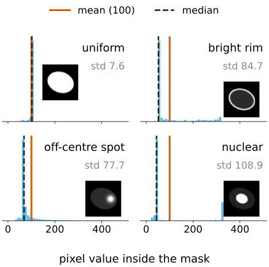
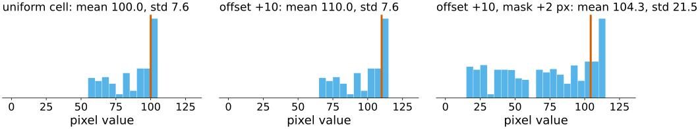
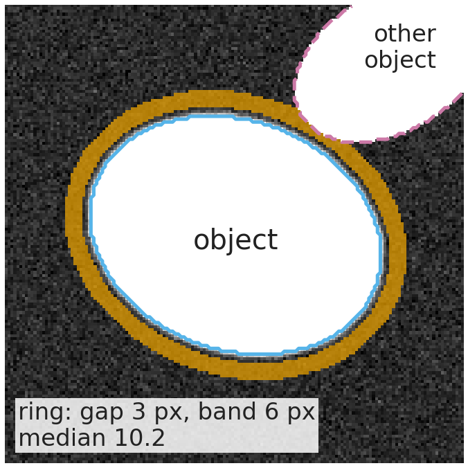
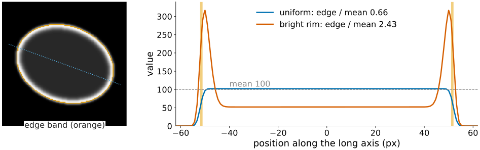
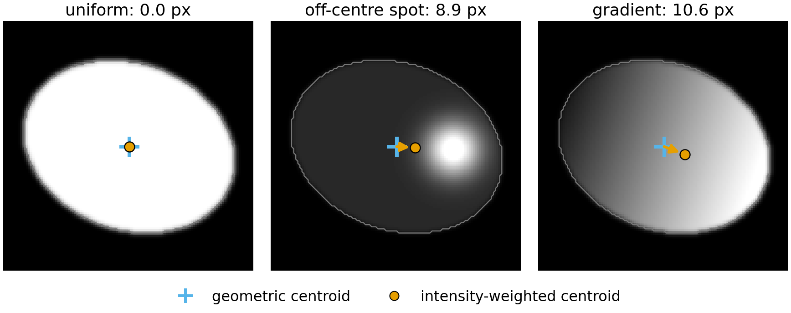
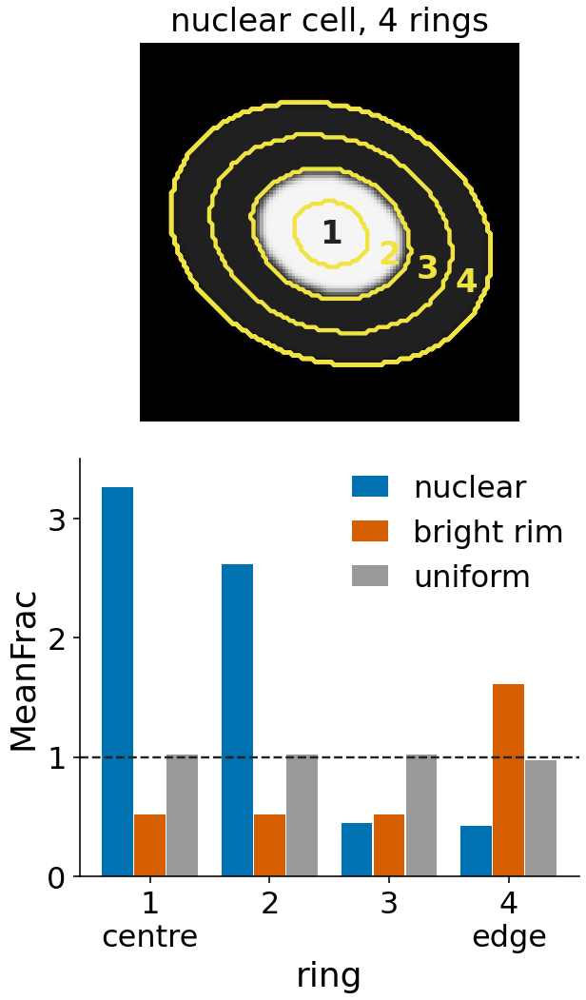

A segmentation gives a label image; a measurement turns it into a table: one row per object, one column per property. The size and shape columns were the labelling day. Today: what the pixel values inside an object tell us.
Statistics of the values: integrated, mean, spread, median, quartiles, MAD.
Which numbers survive a background offset, a gain, a mask one pixel too large, saturation.
Where the signal is: edge intensity, mass displacement, radial distribution.
From a table to numbers you can compare: units, aggregation per well, normalisation.
Slides titled The math give the formulas and proofs; the ideas are complete without them.
Recall: the size and shape columns
From the labelling day (region properties and shape features), not repeated here:
column
what it is
unit
area, equivalent diameter
pixel count; diameter of the disc with that area
px², px
perimeter
boundary length (the edge count is about 27 % too long)
px
extent
area / bounding-box area
–
axis lengths, orientation, eccentricity
from the second moments (the equivalent ellipse)
px, °, –
Euler number
objects minus holes
–
convex area, solidity
convex hull; area / hull area
px², –
form factor
4\pi A/P^2 (inherits the perimeter bias)
–
Feret diameters, inscribed radius
caliper widths; largest inscribed disc
px
Rotation-invariant moment codes (moments elective) and skeleton lengths and branches (skeleton elective) are further columns. What else is in the table?
Same mask, same total signal
Six synthetic cells: identical mask (6521 px), identical sum of the pixel values (652 100). Uniform, bright rim, one off-centre spot, punctate, gradient, nuclear.
Area, shape and the total are the same. A biologist would call these six different phenotypes.
Which numbers separate them? Spread, extremes, where the signal sits relative to the centre and the edge.
Statistics of the pixel values
Take the values I(\mathbf x) of the n pixels inside the object \Omega:
Integrated intensity = their sum: proportional to the amount of dye (DNA content: G2 nuclei have twice the integrated DAPI of G1 nuclei).
Mean = sum / area: proportional to the concentration.
Standard deviation, min, max: spread and extremes.
Robust versions: median, lower and upper quartiles (25 % and 75 % of the pixels below), MAD = median of |I - \text{median}|.
cell (demo)
mean
std
max
median
edge / mean
uniform
100
7.6
102
102
0.66
bright rim
100
84.7
318
52
2.43
off-centre spot
100
77.7
488
69
0.46
nuclear
100
108.9
326
44
0.28

The math: intensity statistics
For the values I_1, \dots, I_n of the pixels of \Omega:
\sigma divides by n: the pixels are the whole object, not a sample (tools differ; n - 1 changes little for n in the hundreds).
Quantiles q_p by sorting: position h = (n-1)p in the sorted list, linear interpolation between neighbours. Median q_{0.5}, quartiles q_{0.25}, q_{0.75}.
\mathrm{MAD} = \operatorname{median}_k |I_k - q_{0.5}|. For normal data \mathrm{MAD} = \sigma\,\Phi^{-1}(0.75) = 0.6745\,\sigma, so 1.4826 \cdot \mathrm{MAD} estimates \sigma.
Sorting costs O(n \log n) per object; sums cost O(n), for all objects in one scan.
Which numbers survive what
change
integrated
mean, median, quartiles
std, MAD
ratios (edge / mean)
background offset +b
+\,b\,n
+\,b
unchanged
change
gain \times g
\times g
\times g
\times g
unchanged
mask 1–2 px too large
includes the blurred edge and background
lower
larger
change
saturation
too low
mean too low; median and quartiles unchanged unless half the object clips
std too low
change

Demo numbers (uniform cell): offset 10 → mean 110.0, std 7.6 unchanged. Mask 2 px too large (with offset 10): 528 extra pixels, mean 110.0 → 104.3. Spot cell clipped at 300: max 488 → 300, mean 100 → 96.0, integrated −4 %.
How values are stored, rescaled and when they clip is the bit depth day.
The math: offset and gain
Write the measured image as J = g\,I + b (gain g > 0, offset b).
Sum: \sum_\Omega J = g \sum_\Omega I + b\,n. Mean: \mu_J = g\,\mu_I + b. Every quantile moves the same way: q_p(J) = g\,q_p(I) + b (sorting is unchanged by an increasing map).
Spread: \sigma_J = g\,\sigma_I and \mathrm{MAD}_J = g\,\mathrm{MAD}_I: differences cancel b.
A ratio of two means \mu_1/\mu_2 (edge / mean, nucleus / cytoplasm) cancels g but not b: \frac{g\mu_1 + b}{g\mu_2 + b} moves towards 1 as b grows.
So subtract the background before any ratio, and divide by a reference after.
Local background
The offset is rarely constant across an image. Measure it next to each object:
A ring around the object: skip a gap of a few pixels (the blurred edge), then take a band of a few pixels; leave out pixels that belong to other objects.
Background = the median of the ring (robust to a neighbour’s edge or debris).
Subtract it from every pixel of the object, then compute the statistics.
The ring is “distance to the object between gap and gap + width”: a threshold of the distance transform of the background (morphology day).

Edge intensity
The edge band = the object minus its erosion by one pixel (the cross): the object pixels that have a 4-neighbour outside (morphology day).
The same statistics on the band: edge mean, edge integrated, …
Edge / mean separates rim staining (a membrane marker) from filled staining.
Demo: bright rim 2.43, uniform 0.66 (not 1: the optics blur the edge, so the outermost pixels are darker), nuclear 0.28.
It is sensitive to the mask: one pixel inwards or outwards moves the band to a very different place in the edge profile.

Mass displacement
Two centres of an object:
the geometric centroid: mean pixel position (labelling day);
the intensity-weighted centroid: each pixel counts with its value, the “centre of mass” of the signal.
Mass displacement = the distance between them (in px, or µm with the pixel size).
0 for a uniform or a rim-stained cell (by symmetry), large when the signal is polarised: demo off-centre spot 8.9 px, gradient 10.6 px.
Noise and a background offset pull the weighted centroid towards the geometric one: subtract the background first.

The math: the first intensity moment
Intensity moments are the region moments of the labelling day with weights I(\mathbf x):
Mass displacement = \lVert \bar{\mathbf x}_I - \bar{\mathbf x} \rVert.
With I = c constant, M_{pq} = c\,m_{pq} and the two centroids coincide.
With J = I + b: \bar{\mathbf x}_J = \frac{M_{00}\,\bar{\mathbf x}_I + b\,n\,\bar{\mathbf x}}{M_{00} + b\,n}, a weighted average that slides towards \bar{\mathbf x} as b grows.
Radial distribution
Divide the object into krings that follow its shape, from the centre to the edge.
For each pixel: d_c = distance to the centre point, d_e = distance to the edge (the distance transform). Normalised position\rho = d_c/(d_c + d_e): 0 at the centre, close to 1 at the edge, whatever the shape.
Ring j holds the pixels with \rho in [\tfrac{j-1}{k}, \tfrac{j}{k}).
FracAtD: the share of the object’s total intensity in ring j.
MeanFrac: FracAtD divided by the share of the object’s pixels in ring j: 1 = as expected for uniform staining, > 1 enriched, < 1 depleted.
RadialCV: how unequal the ring is around the circle (coefficient of variation over 8 angular sectors).
Demo, 4 rings: nuclear MeanFrac 3.26, 2.62, 0.45, 0.42; bright rim 0.52, 0.52, 0.52, 1.61; uniform about 1.

The math: rings
For pixel \mathbf x \in \Omega with centre \mathbf c: \rho(\mathbf x) = \dfrac{\lVert \mathbf x - \mathbf c\rVert}{\lVert \mathbf x - \mathbf c\rVert + \mathrm{DT}(\mathbf x)}, ring r(\mathbf x) = \min(k, \lfloor k\rho \rfloor + 1).
\sum_j \mathrm{FracAtD}_j = \sum_j a_j = 1, and \sum_j a_j\,\mathrm{MeanFrac}_j = 1: enrichment in one ring is paid for in another.
\mathrm{MeanFrac}_j = \bar I_j / \bar I: the ring’s mean over the object’s mean, so the gain cancels; an offset pulls every MeanFrac towards 1.
The centre \mathbf c matters: the centroid, the intensity maximum, or a parent object such as the nucleus (nuclear vs peripheral signal; translocation assays).
Try it: intensity features
Per object, per image, per well
Per-image columns use the same statistics over the whole image: total intensity, fraction of saturated pixels, a focus score. They are quality control: flag images before trusting their objects.
Units: lengths × pixel size (µm), areas × pixel size² (µm²), 3D voxels × \Delta x\,\Delta y\,\Delta z (often anisotropic: the 3D images unit). Intensities stay in the stored units: compare only images acquired and stored the same way. Ratios are dimensionless.
Aggregate objects per image or per well: the median (robust), the mean, counts and fractions (“% of cells with more than 3 spots”).
Redundant columns: area, perimeter, equivalent diameter, convex area and maximum Feret move together. Keep one per group, or summarise with PCA (day 1).
Normalisation: plates and batches
Wells on different plates or days differ in gain and offset (batch), and within a plate in smooth row/column gradients (edge evaporation, illumination, timing).
z-score against the control wells: (x - \text{mean}) / \text{sd}.
Robust z: (x - \text{median}) / (1.4826 \cdot \text{MAD}) of the controls: one outlying control well does not inflate the scale.
Robust z removes a plate’s offset and gain, not a gradient across it. A gradient needs a row/column correction first (subtract row and column medians: “median polish”); the scale then comes from the robust spread of all wells.
Under x \mapsto g x + b the median moves to g\,\mathrm{med} + b and MAD scales by g: z is unchanged. That is why it removes batch gain and offset.
Breakdown: up to half the controls can be wild before the median and MAD follow them; one wild value moves the mean and sd without bound.
Median polish fits x_{rc} \approx m + a_r + b_c by alternately subtracting row medians and column medians; the residuals x_{rc} - a_r - b_c keep the treated wells (few per row and column) and lose the smooth gradient. A column made only of controls loses its spread in the polish, so the scale is taken from the MAD of all residuals (this is the idea of the “B-score”).
Catalogue: intensity columns
column
formula
unit
range
integrated intensity
\sum_\Omega I
intensity · px
\ge 0
mean, median, quartiles
location of the values
intensity
min … max
std, MAD
spread of the values
intensity
\ge 0
min, max
extremes (max saturates)
intensity
edge mean, edge / mean
statistics on the edge band
intensity, –
mass displacement
\lVert \bar{\mathbf x}_I - \bar{\mathbf x}\rVert
px (µm)
\ge 0
FracAtD, MeanFrac, RadialCV
share, enrichment, asymmetry per ring
–
0…1, \ge 0, \ge 0
local background
median of a ring around the object
intensity
What comes next with the table: classifying objects from it is the random forests day; turning numbers into a claim (replicates, effect sizes, many features) is the evaluation day.
Summary
An object’s pixel values give location (mean, median, quartiles), spread (std, MAD) and amount (integrated).
A background offset moves the location and the integral, not the spread; a gain scales all but ratios; a mask that is too large dilutes the mean; saturation clips the top.
Where the signal is: edge / mean, mass displacement, and radial rings in normalised distance (FracAtD, MeanFrac).
Comparable numbers need units, a robust aggregate per well, and normalisation: robust z against controls for batches, a row/column correction for gradients.